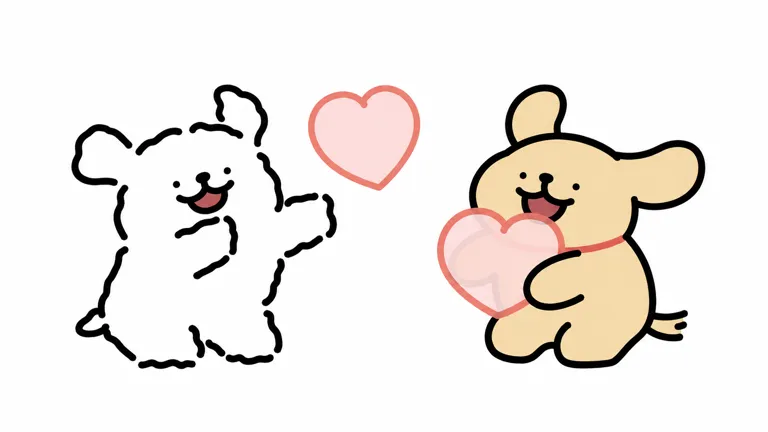
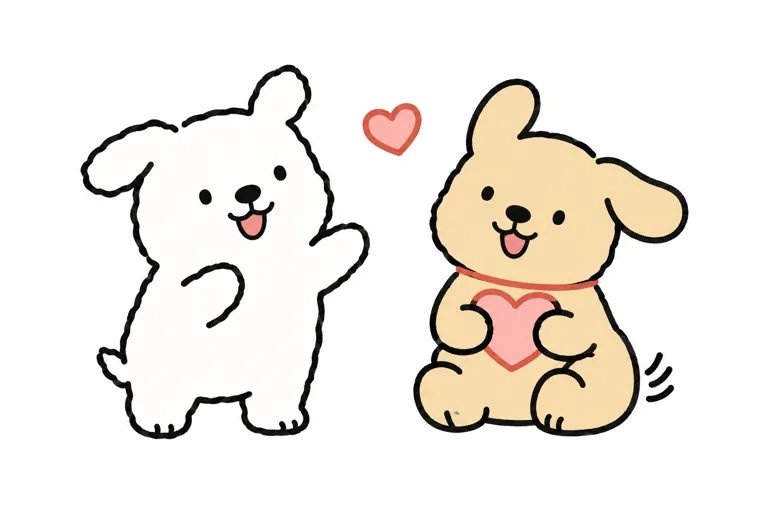
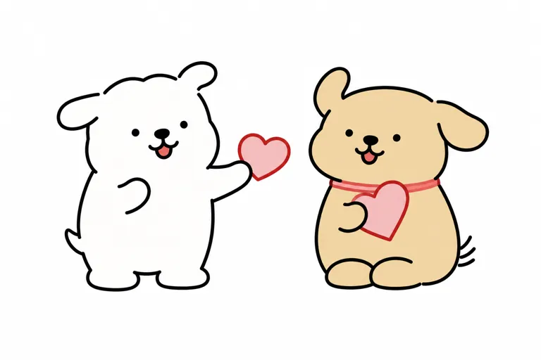

角色替用户把关系中的动作做出来。
V01与V04中送心、抱住、陪坐、闹别扭等动作构成互动；手册p3定义率真、示爱和包容。 [A01] [M01]
推断边界：这是内容机制解释，未做用户实验，不能证明发送必然促成购买。
把不好意思说的亲近，
交给两只小狗。
从表情包到漫画、毛绒与日常授权，结合代理方商务手册，拆解角色互动、商业证据和三轮平面实测。

线条小狗值得研究的地方，是把示爱、闹别扭、安慰和靠近变成一组能被直接使用的动作。双狗关系让一个角色的动作得到另一个角色回应，表情包、漫画和成对商品因此可以共享同一套内容。
有小脾气，
也想和你贴在一起。研究归纳 · 非官方口号
V01与V04中送心、抱住、陪坐、闹别扭等动作构成互动；手册p3定义率真、示爱和包容。 [A01] [M01]
推断边界：这是内容机制解释，未做用户实验，不能证明发送必然促成购买。
点眼、鼻下双弧嘴跨平面、毛绒仍出现；白狗断续毛边与黄狗平滑色块形成对照。 [A01] [A04]
推断边界：耳形、嘴型可变；未做识别率测试，不能仅靠一张图定义全IP标准。
表情、漫画、毛绒与日用联名共同存在；手册展示内容、商品、空间三个授权入口。 [M01] [A04] [A07] [A12]
推断边界：渠道铺货、品牌投放与原有用户同样可能驱动销售；没有可隔离IP增量的对照组。
| 问题 | 本轮结论 | 证据边界 |
|---|---|---|
| 谁创作 | 韩国 Moonlab Studio。中国起重集与日本U-GENIE为可核运营窗口。[A01] [A02] [A03] | 没有合同，不能写全球买断或永久独家；不把商品发行商当作者。 |
| 2020还是2021 | 2020年12月角色登场；2021年6月Kakao贴图发行。[A01] | 分别是角色履历与平台发行，非时间冲突。 |
| 白狗是什么性别 | 手册明确标“未知”，身高也未知。[M01] | 不凭情侣贴图或联名情人节主题补写性别。 |
| 小金毛的性格 | 中文手册p3称比白狗更凶一点；日本2025简介偏温和、坦率。[M01] [A01] | 并列地区/文案版本差异；不能写成一套无冲突的全球统一设定。 |
| 两狗的关系 | 朋友关系可核；Couple doggy是贴图产品名，手册有友谊与爱情主题。[A01] [M01] | 允许不同使用者映射关系，不由营销名推出固定性别与唯一配对定义。 |
| 时间 | 事件 |
|---|---|
| 2020-12 | 白色 Maltese 角色登场；依据日本代理履历，未取得当月原始首帖。 [A01] |
| 2021-06 / 10 | 白狗 Kakao 贴图上线；10月好友 Retriever 登场。 [A01] |
| 2022-08 / 09 | 手册称8月10日入驻国内社媒、微信表情平台；日本履历记9月小金毛独立 Kakao 贴图上线。 [M01] [A01] |
| 2023 | 手册记南京、上海快闪及瑞幸两次合作；其销售与曝光数据为代理自报。 [M01] |
| 2025-04 | 磨铁4月25日公告《亲爱的小狗》上市；书商标2月1日书目出版日期，两种时间分列。 [A07] |
| 2025-12 | 日本 LOFT 首次快闪于12月27日开始；是日本首场，非全球首场。 [A05] |
| 2026-08 / 09 | Furyu 景品扩展；9月《亲爱的小狗2》预售后现货上市。 [A04] [A08] |
已参考你提供的2026年4月版商务手册。它适合核对代理方如何介绍角色、展示合作与产品；销售、热度、画像仍是代理方自述。报告保留页码，未公开原PDF或页面截图。[M01]
| 手册项目 | 本轮读到的内容 | 如何使用 |
|---|---|---|
| p6 表情规模 | 累计发送超150亿、下载达3亿；页脚截至2025年10月。 | 两者都是累计量，未说明去重，不能称150亿用户或3亿买家；也不是截至2026年10月。 |
| p7 用户画像 | 女性超七成，19–23岁柱形最高；未给精确年龄百分比。 | 仅称表情使用画像；样本、抽样和期间未知，不外推整个商品购买群体。 |
| p8 商品规模 | 2023年累计销售额约5亿；线下3000+门店售周边。 | 销售主体、币种、渠道合并和结算口径未明；不写作IP营收、版税或利润。 |
| p19 / p61 瑞幸 | 第三弹小白梨首周724万杯；2023七夕黑凤梨首日727万杯。 | 不同产品、不同时间窗，不能合并排名或算同比；饮品销量不等于由IP带来的增量。 |
| p13 授权入口 | 内容营销、商品定制、主题空间三类。 | 可据此整理合作形式；不代表任一具体品类现在均可授权。 |
| p75–78 快闪 | 列上海、南京、韩国及成都活动与销售自报。 | 保留事件与地区；没有交易底表，不将排队数直接折成买家或转化率。 |
| 观察层 | 判断 | 证据强弱 |
|---|---|---|
| 外壳 | 点眼、小鼻、双弧嘴是低细节脸；白色毛边与浅麦黄平滑外形形成配对差异。 | 图像直接观察；未做盲测。 |
| 内核 | 表达亲近时直接，遇到不喜欢时也允许小脾气；不用一直乖巧。 | 中文手册自述＋表情样本；“允许”是研究解释。 |
| 路人层 | 可能先理解白黄双狗、爱心、拥抱等通用信息。 | 待验证用户假设。 |
| 使用者层 | 可能把两狗映射到朋友或伴侣，把发送表情当成一次回应。 | 待验证；没有访谈或代表性评论采样。 |
| 时代窗口 | 聊天表情成为低门槛日常接触，授权商品承接随身与送礼场景。 | 渠道与商品存在可核；增长因果未隔离。 |
本轮小红书实际尝试“线条小狗 品牌介绍”和“线条小狗 产品汇总”，连接的Chrome均出现设备登录超限。因此没有把搜索摘要、旧截图或手册中的社媒截屏冒充当次站内调研。访问记录
以下6个公开样本均已打开观察。研究对象是可见版本；手册另用于交叉检查，未把主题插画冒充标准三视图。
白狗头身相接、断续起伏轮廓，一手前伸一手弯曲；黄狗坐姿、平滑外轮廓、红项圈与抱心动作。两者点眼、鼻下双弧嘴及暗红舌相近。 [A04]
设计机制：白黄与毛边/平滑对照保留双角色差异；动作把独立造型连成关系。
原创启发：用新动作表达关系，但必须另建角色身份。
平面色块，无材料结构证据；蓝底、骨头字标与地面椭圆是物料设计，不是身体。

左右短耳不对称，白色身体以粗黑断笔描出；前臂遮挡花盆，双弧闭嘴；紫花和绿叶占画面右侧。 [A01]
设计机制：相同面部可从送心转到照顾植物；主题信息主要在道具。
原创启发：借“通过行为表现照顾”而非直接复制花盆姿势。
不是穿花朵服装；图中不提供背面或制造尺寸。

浅麦黄身体、上举双臂、两耳外展、张口暗红舌；头后花瓣与胸前珊瑚色蝴蝶结。 [A01]
设计机制：识别不只依赖常见红项圈；主题可以改变装饰与姿态。
原创启发：区分角色识别和主题变量，不能把蝴蝶结写成全IP固定项。
花瓣的连接方式在平面中不明确；不可据图确定布料或可拆结构。

送心、相抱、后退、张嘴和钻入被窝等动作并存；白狗耳形和肢体会随表演变化。 [A01]
设计机制：情绪不是一张固定微笑脸；双角色互相回应使动作可连用。
原创启发：为新角色建立可回应的动作词汇，而不是只做十二个服装换色。
本轮只读静帧缩图，未播放动画；不能把格数当销量或用户频次。

白黄两只坐姿、双垂耳、黑色点眼及鼻嘴线迹；黄狗红项圈，体表短毛。白狗在垫上，视觉高度受摆台影响。 [A04]
设计机制：线画的断笔没有被机械缝成空隙，识别转移到脸、体块与角色色。
原创启发：跨材料保留关系要重新打样，不能把二维描边当三维接缝。
公告约27cm；纤维组成未列。垫子和背景球是摄影场景，未证随商品附送。

上排垂耳闭嘴，下排耳朵上扬、开嘴带舌；头顶挂绳可见，黄狗保留红色颈圈。 [A04]
设计机制：同角色用口型与耳姿做近距离差异，随身场景承接表情表达。
原创启发：先保留表情可读性，再决定挂点位置与尺寸。
公告有橡皮挂绳；图不能验证挂点强度、材料成分和量产良率。
| 层级 | 观察结论 |
|---|---|
| 重复识别候选 | 点眼、鼻下短双弧嘴、紧凑面部；白黄双角色色彩关系。不是每幅都开嘴、立耳或带爱心。 |
| 动作变量 | 耳朵可上扬、外展或垂落；嘴可闭、张、露舌，肢体可拉伸。 |
| 主题变量 | 花、蝴蝶结、帽子、衣服和背景属于款式；不能把粉底蓝底写成身体色。 |
| 跨材料适配 | 毛绒用体块、面部线迹和颈圈保留识别，平面断笔不是实体断裂缝。 |
| 仍未知 | 侧背标准、精确尺寸比例、官方生产色、材料成分与连接强度。 |
#FFFFFF白狗身体#EBD5A3黄狗身体#171515外轮廓、眼鼻嘴#DF8272黄狗项圈及爱心边#F2D7D0当幅爱心#C4E6F4V01背景，不属于狗身均为目视近似，不是官方色号；未做主体分割或面积百分比。浅蓝仅为V01环境色。缩图、灰度、复杂背景的正式识别实验和实物色差测试尚未开展。
| 载体／产品 | 地区与时间 | 可核信息 | 边界 |
|---|---|---|---|
| LINE 动画贴图 | 台湾繁体页面／当前列价 | NT$72；Moonlab_studio；©MALTESE | 不是最初Kakao售价，也未据页面证明全球首商品。 [A06] |
| 《亲爱的小狗》简体第一册 | 2025／大陆 | 北京联合出版公司；ISBN 9787559682390；定价RMB59.80 | 磨铁4/25上市公告与书商2/1出版日期并存，未见版权页。 [A07] |
| 《亲爱的小狗2》 | 2026／大陆 | 9/15预售，9/29现货；ISBN 9787559692337由书商书目支持 | 官方称中韩同步，韩版出版社和ISBN未核；不把马来西亚售价当国内定价。 [A08] |
| 《親愛的小狗》首刷限定版 | 2026／台湾 | 东立；7/30；ISBN 9786260274085；书商列NT$1100 | 繁体限定版与大陆普通版不同，不直接比裸价。 [A09] |
| Furyu BIG 毛绒 | 2026-09／日本 | 约27cm，两角色；游戏厅景品 | 无固定官方零售价，未知纤维组成；不采用二手价。 [A04] |
| Furyu Mascot | 2026-08／日本 | 四款；橡皮挂绳 | 尺寸及材料未完整列出；不从图推算。 [A04] |
| Nusign 文具合作 | 2026-06／中国官宣 | 中性笔、口袋本、记事贴 | 合作存在≠单SKU卖得最好。 [A12] |
出版在这条路径中是后续内容产品，不是角色最早起源。手册还展示植绒盲盒、服饰、家居、饮品与空间活动，可作为载体广度线索；未取得全品类净销表，不能判定哪一类是全球第一爆款。[M01]
锁定V01公开双狗送心插画，保留两个角色的既有动作，去掉版头与背景。测试的是这一幅二维研究重绘，不是全套基础设定或新角色创作。

可见双狗轮廓、短耳与脸、断笔、项圈、坐姿和抱心遮挡接近。仍有线宽、嘴弧与微弱色块明暗差；背景按要求去除。
逐项目检包括轮廓、五官、色区、标志组合与动作遮挡。结果没有数值相似度分数；未验证多次重复生成、其他姿势、英文或实物。提示词为研究重建，非作者原始提示词，也不证明原作使用AI。
用途：identity-preserve，二维平面研究转绘。输入图1是唯一身份、比例、动作与颜色参考。重绘图中下半部的两只小狗及两颗爱心，改为纯白背景；删除顶部骨头形品牌区、文字、蓝色背景和脚下椭圆地面。不要重新设计角色。 固定项：逐项保持原图两只狗的完整外轮廓、相对大小、倾斜方向、两狗间距与面部配置。左狗为白色，短耳形状、头顶不规则浅毛边及断笔位置、极小点眼、黑鼻、双弧嘴与暗红舌均按原图；一手向画面右方伸出，另一手弯在胸前，保留短腿与左下尾尖。右狗为原图浅麦黄色，保留一耳上扬一耳横展、小点眼、鼻嘴与舌头，细珊瑚红项圈、一条C形近侧前臂、坐姿短腿和右后短尾。保持它胸前浅粉半透明感爱心的原始遮挡关系，以及两狗中间偏上悬空爱心的位置与大小。不要添加第二个可见前爪、脚趾、膝盖圆球、眉毛或腮红。 画面：把上述完整组合等比例放大并居中于横向白底画布，组合四周留约12%空白。线条沿用原图略有手绘起伏的粗黑圆头线，保留有意断笔，不机械变成连续闭合矢量线。角色平涂，不加光照、渐变、纹理、毛绒质感或立体体积。此图为保留原始动作的研究重绘，不推演侧背面、其他动作或未见部件。

耳形变成长垂耳／兔耳；头身分离更强，黄狗增加膝盖和双爪，出现脚趾与渐变。
修订方向：收短耳形，强调头身相接、无膝球脚趾与原始遮挡。
用途：illustration-story。生成一张白底二维平面研究图，横向画面，两只简笔小狗全身，左白右浅麦黄，彼此分开。只用平涂色块和粗黑圆头手绘线，无光影、无立体渲染、无文字标志。 左狗为头身相接的短胖直立体，白色身体，外轮廓由粗线画出略不规则软绒起伏，头顶有两只向外弯折的短耳，左耳横向展开、右耳偏竖。头宽与躯干宽接近，没有分离的大圆脑袋或颈圈；两只小黑点眼、居中的椭圆黑鼻，鼻下短竖线连双弧嘴，张口露暗粉色小舌。面部集中在上部、两眼略倾斜。身体向右轻倾，右侧一只短手抬向朋友，另一只弯在胸前，下方两只短脚，左下伸出很短的尾尖。轮廓在耳根、颊侧、手臂交界有少量自然断笔。 右狗身体为浅麦黄色，轮廓光滑，头身相接、坐姿，两只短圆脚向前。一只长圆耳向上、另一只向右外展，头顶为宽缓弧线。小黑点眼、椭圆黑鼻及双弧笑嘴，张口露暗粉色舌头；脖颈一圈细珊瑚红项圈。两只前爪抱着胸前一颗浅粉色珊瑚红描边爱心；右侧臀后露出由三条短线概括的尾端。两狗之间靠上另有一颗小爱心。 两者可见身高接近，左狗比右狗略窄。五官简短疏朗，眼睛不能画成大眼或加高光、眉毛、腮红；不要猫耳、熊脸、长口鼻、衣服、额外毛发细丝。画面只呈现上述两个角色和两颗爱心，四周保留留白。下载原文

脚趾去掉，但白狗耳朵和身体仍偏长；黄狗出现独立双脚和宽颈圈，心形变成递到手边，渐变仍在。
修订方向：纯文字没有锁定既有轮廓；转为单独记录的参考辅助测试。
用途：illustration-story；白底二维平面研究重建。画面中只有两只简笔狗和两颗爱心，左白右浅麦黄，完整全身。线条为平整、粗细基本一致的纯黑圆头线，轮廓允许少量断笔；填色纯色均匀，无铅笔纹理、阴影、渐变、毛丝、爪尖或脚趾。 左狗：整体从耳尖到脚底为宽1高1.35的短胖团块；头没有颈部切口，不是大圆头加窄身。脸区占身高上方三分之一，两只极小黑点眼相距约头宽四分之一，黑鼻略大于眼，低于双眼，鼻下短竖线连接向两边上翘的短嘴弧；嘴下露一小块暗红舌。左耳短而横向伸出，右耳短而斜向右上弯，耳根断笔；头顶毛边为三段宽浅起伏，不是密集毛卷。躯干前轮廓轻微向右倾，右手侧伸，左手弯在胸前且用两段不闭合短弧概括。底部脚只有扁圆轮廓，不画脚趾、脚掌、手指。左下尾尖短而贴近身体。 右狗：头身组成坐姿短团块，高度与左狗接近。头宽为身宽约1.2倍，头顶弧线低缓，左耳短圆柱形向上弯，右耳宽扁向右外展，不是长兔耳。黑眼为极小圆点，鼻下是双弧嘴和暗红小舌，眼鼻口是小而集中的一组。浅麦黄色单色身体无白色口鼻斑；脖颈一根细珊瑚红项圈线。左侧胸前抱一颗浅粉爱心，爱心红边，近侧前爪是一条C形弧，远侧前爪被心形挡住。臀部右下后伸三条很短尾线。双脚为相连的两个扁圆块，没有独立膝盖圆球。 构图：两狗间隔约左狗半个身宽，平视，不对称互动；左狗向右递出一颗悬空浅粉心，右狗抱另一颗心。保留宽白边。不要字标、场景、服饰、腮红、眉毛、眼高光和额外部件。下载原文
| 交给 | 候选启发 | 必须新建 |
|---|---|---|
| 表达 lab | 把“想靠近但有小情绪”拆成具体动作与回应。 | 新的生活矛盾、关系和表达，不能只换一句“治愈”。 |
| 找形 form | 低细节脸部与动作幅度相互配合。 | 独立轮廓、比例、五官及记忆点；不复制白黄双狗整组身份。 |
| 定型 studio | 按聊天、送礼、随身、家居分别确定载体与尺度。 | 新角色色材、表情可读性、挂点和量产样；生成图不是实物验收。 |
原创三阶段中英六类出图文本未发布，避免把未测草稿混成可用方案。先保留机制交接，后续创作另立目标。
截止2026-10-20。官方履历与商务成绩自述、公开商品事实、媒体采访、研究推断分别处理。手册页码为PDF顺序页。原图版权属于原权利人，本页外链引用；手册原件未公开。
创作登场与平台发行不同；这些是代理官方履历，未找到2020原始首帖或Kakao首发页。不证明版权买断、独占地域条款或自然人作者身份。
打开来源 ↗用于核对账号关系，非版权合同；未读取链接内XHS或浏览器内容。Linktree页面注册于2024不等于IP创作年。
打开来源 ↗只支持运营及商务窗口，不证明全球版权所有、买断或独家授权；官网全平台20+IP、500+合作品牌等不能归到线条小狗。
打开来源 ↗景品无固定零售单价；全文未给纤维成分和小挂件精确尺寸；不把宣传的柔软手感当材料检测。2021仅指Kakao上线。
打开来源 ↗多平台粉丝合计非去重人数或全球用户规模。当前公告列后续巡回可能经编辑，不能据此断言所有日期在最初发布时已计划。规则是门槛非负面投诉。
打开来源 ↗当前区域数字商品价，不是2021 Kakao首发价；不代表下载量或购买人数。
打开来源 ↗官方4月25日上市与零售书目2月1日不同，不擅自选成同一首发日；文轩是书商书目，不是出版社版权页。纸张克重不是页数。
打开来源 ↗韩版出版社/ISBN未核；不能把中文书ISBN当韩版。KotaBuku URL尾端另有数字，但正文ISBN如列；Publisher字段另列当地供应方，勿混成中文原出版社。未采用书商60万畅销宣称。
打开来源 ↗书商完整条目，未找到东立官方版权页；限定版不能与大陆普通版按裸价比较。作者字段线条小狗不能据此推断国籍。
打开来源 ↗出版发行量，不是终端实销、独立读者、IP总营收或授权金；未有审计或退货数据。原京报网页本轮未返回正文，采用可读中新官方账号稿。
打开来源 ↗媒体原始采访而非正式品牌召回公告；不能确定问题批次、全网负面占比、损失或最终补偿；其它瑞幸文字事故不归此IP。
打开来源 ↗证明合作官宣与规划，不代表到场人数、销售成功或合同收入；未从未目检产品图补编材料价格。
打开来源 ↗支持中文角色定位与运营入口；不证明版权买断。
打开来源 ↗手册版本时间不等于所有数据截止时间。仅报告摘录与页码公开，原文件和页面图不再分发；没有公开原件链接。
用户提供文件 · 无公开原件链接